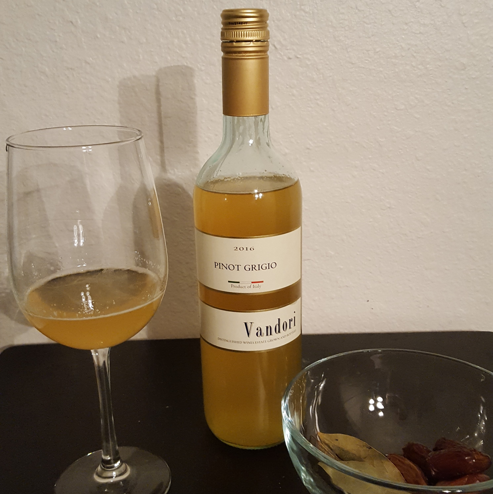

Roman Honeyed Wine Recipe

Roman Honeyed Wine or Mulsum is a sweet wine made by mixing honey, water, and wine. The
mixture is fermented and often includes spices like cinnamon. It was a popular drink during ancient Roman banquets.
Ingredients
- 1 bottle red wine
- 1/4 cup honey
- 1 cinnamon stick
- 3 cloves
- 1 orange, sliced
- 1 lemon, sliced
Instructions
- In a large pot, combine the wine, honey, cinnamon stick, and cloves.
- Heat over low heat, stirring occasionally, until the honey is fully dissolved.
- Add the sliced orange and lemon to the pot.
- Heat the mixture for an additional 10-15 minutes, until the fruit is slightly softened and the wine is warm.
Return to home